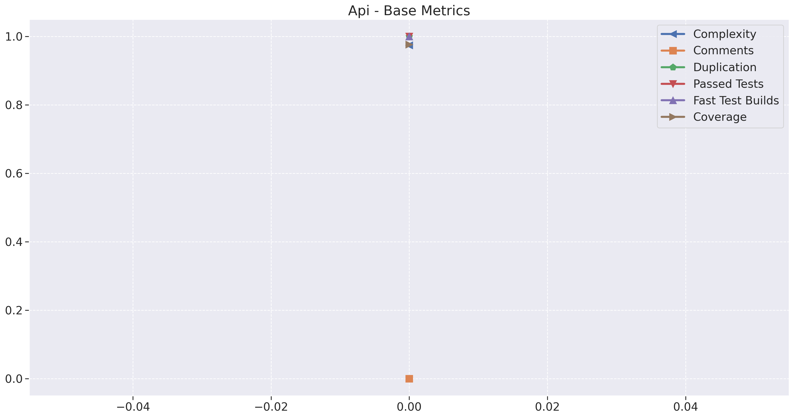
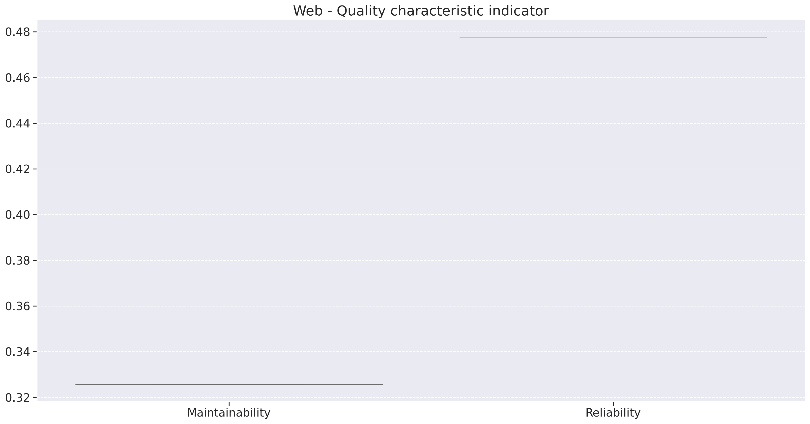
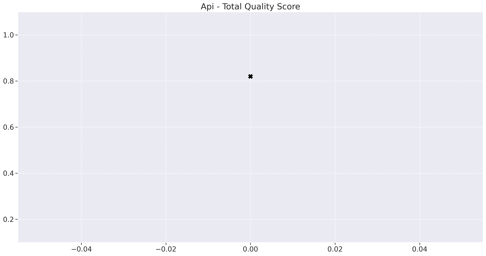
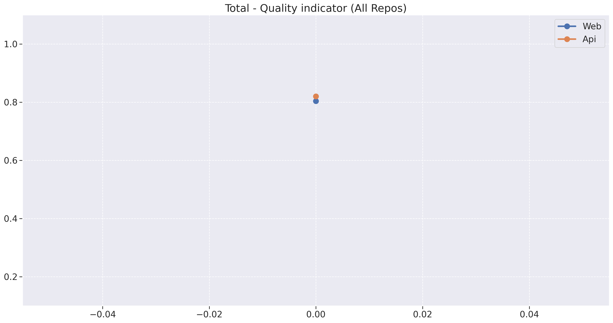
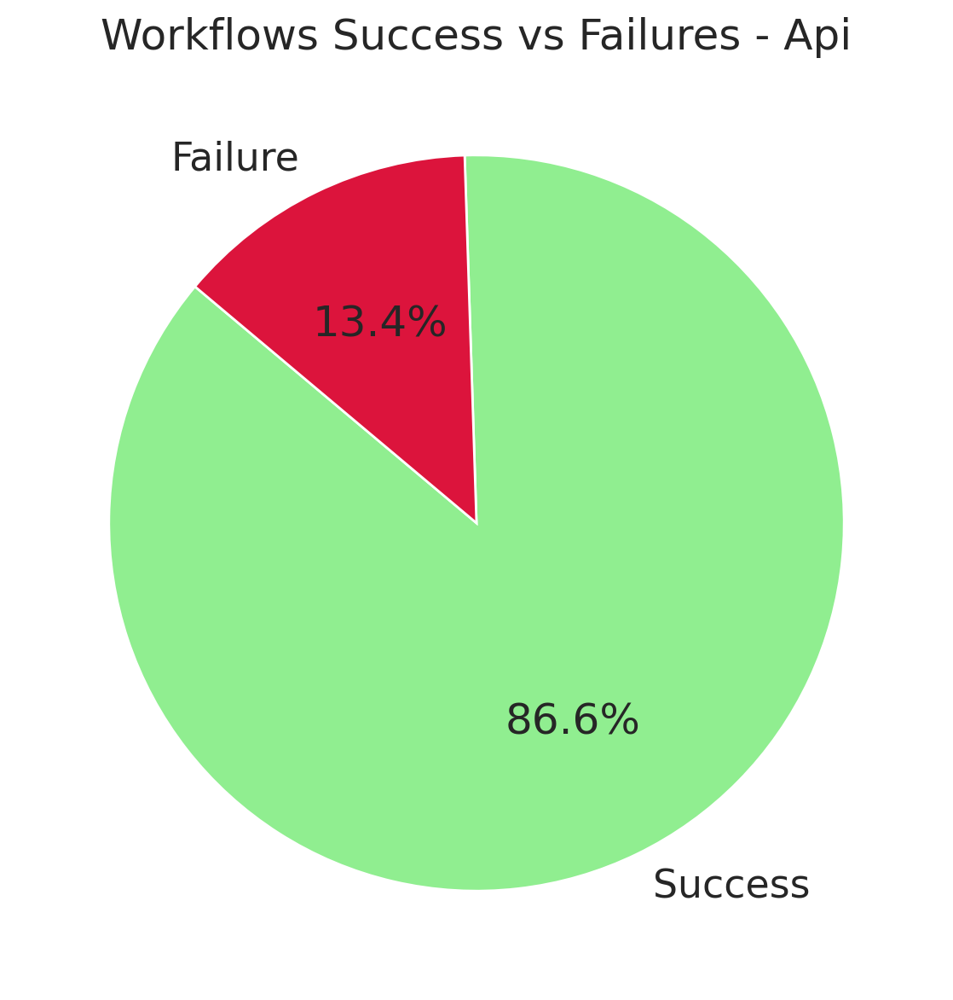
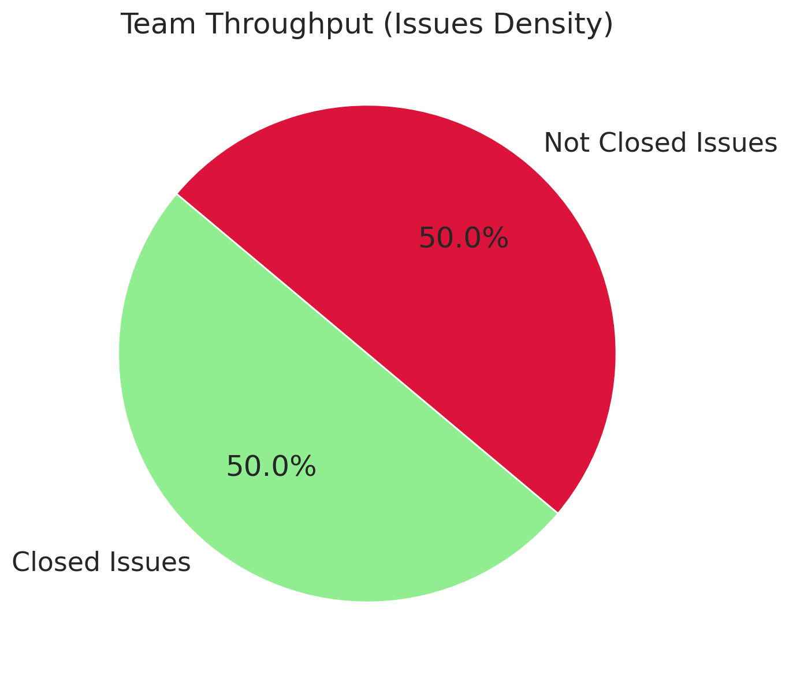
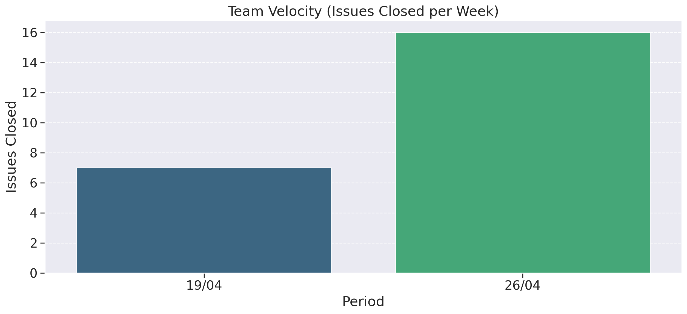
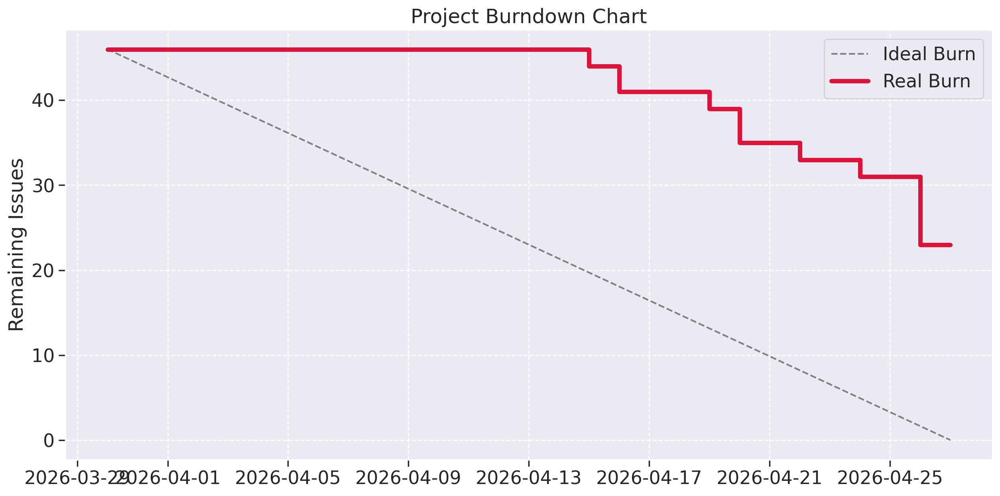

Analytics - Product Quality
Date: 2026/04
Summary: Este notebook representa a análise de qualidade do projeto RetinaScan, utilizando o modelo de qualidade Q-RAPIDS.
Equipe
- Semester: 2026/01
- Professor: Hilmer Neri
- Membros: - Natália Morais - André Maia - Arthur Ribeiro - Cecília Quaresma - Elias Oliveira - Eric Camargo - Gustavo Costa - Harleny Angelica - Iderlan Junio - Vinicius Roriz - Yan Luca - Zenilda Vieira
Metodologia e Processamento de Dados
O pipeline de dados realiza o unmarshalling de arquivos JSON provenientes do SonarCloud, filtrando componentes por tipo: * FIL (Files): Arquivos de código fonte. * DIR (Directories): Diretórios do projeto. * UTS (Unit Test Suites): Suítes de testes unitários.
As métricas são calculadas por densidade de conformidade. O resultado de cada métrica representa a porcentagem de arquivos que atendem a um critério de qualidade específico (threshold).
Modelo de Qualidade (Q-RAPIDS)
O cálculo final é dividido em dois Aspectos de Qualidade, cada um composto por um Fator de Qualidade.
1. Maintainability (Manutenibilidade)
Baseada no fator Code Quality. A nota é composta pelas métricas:
* Complexity: Proporção de arquivos com complexidade ciclomática média por função < 10.
* Comments: Proporção de arquivos com densidade de comentários entre 10% e 30%.
* Duplication: Proporção de arquivos com densidade de duplicação < 5%.
Fórmula: $Code Quality = (Compl \times 0.33) + (Comm \times 0.33) + (Dupl \times 0.33)$
2. Reliability (Confiabilidade)
Baseada no fator Testing Status. A nota é composta pelas métricas:
* Passed Tests: Proporção de testes que passaram sem erros ou falhas.
* Fast Test Builds: Proporção de builds de teste com tempo de execução < 300.000ms (5 min).
* Coverage: Proporção de arquivos com cobertura de testes > 60%.
Fórmula: $Testing Status = (Success \times 0.25) + (Fast \times 0.25) + (Cov \times 0.50)$
Pesos e Notas Máximas
Conforme definido no script de agregação, cada aspecto contribui com 50% para a nota total. Note que as escalas nos gráficos individuais respeitam estes limites:
| Indicador | Peso (pc) | Nota Máxima Possível |
|---|---|---|
| Maintainability | 0.5 | 0.5 |
| Reliability | 0.5 | 0.5 |
| Total Quality Score | - | 1.0 (Soma dos dois acima) |
Visualizações
O notebook gera três níveis de visualização: 1. Base Metrics: Evolução das métricas individuais (0 a 1). 2. Quality Characteristic Indicator: Boxplots que mostram a estabilidade estatística da Manutenibilidade e Confiabilidade. 3. Quality Score: Gráfico de evolução da nota final do projeto (soma ponderada de ambos os aspectos).
Exportação
Os resultados consolidados são exportados para a pasta ./data/ nos formatos .csv e .xlsx, incluindo um timestamp para controle histórico de versões.





Analytics - Product Quality - GitHub
Date: 2026/04
Summary: Este notebook representa a análise de produtividade e saúde do workflow de desenvolvimento do projeto RetinaScan, utilizando dados extraídos da API do GitHub.
Equipe
- Semester: 2026/01
- Professor: Hilmer Neri
- Membros: - Natália Morais - André Maia - Arthur Ribeiro - Cecília Quaresma - Elias Oliveira - Eric Camargo - Gustavo Costa - Harleny Angelica - Iderlan Junio - Vinicius Roriz - Yan Luca - Zenilda Vieira
Metodologia e Coleta de Dados
A análise processa dados brutos (arquivos JSON) obtidos via integração com a API do GitHub, focando em dois eixos principais: 1. Workflow Runs: Dados de execução das Actions (CI/CD) para medir tempo de resposta e taxa de sucesso. 2. Issues: Monitoramento do volume de demandas criadas e finalizadas para medir a vazão da equipe.
O processamento garante a normalização de datas e o cálculo automático do Feedback Time (diferença entre o início da execução e a última atualização do status do workflow).
Indicadores de Produtividade (Productivity)
Seguindo o modelo de análise, os dados são agrupados em dois fatores principais:
1. Factor: Testing Performance (CI Feedback)
Focado na eficiência das ferramentas de Integração Contínua:
* CI Feedback Time: Mede o tempo médio que o desenvolvedor precisa esperar para obter uma resposta do workflow de build (code-analysis). Um tempo alto indica gargalos no pipeline.
* Success vs Failure Rate: Porcentagem de execuções que terminaram em sucesso comparadas às falhas, indicando a estabilidade do código no repositório.
2. Factor: Issues' Velocity (Team Throughput)
Mede a capacidade de entrega da equipe em um intervalo de tempo:
* Throughput: É a densidade de Issues fechadas em relação ao total de Issues abertas no período.
* Cálculo: Considera a janela temporal entre start_date_issues e end_date_issues.
Visualizações Geradas
O notebook automatiza a geração de gráficos para os repositórios Web e Api:
- CI Feedback Time By Creation Date: Gráfico de linha que mostra a oscilação do tempo de build ao longo dos dias.
- Workflows Success vs Failures: Gráfico de pizza que ilustra a integridade do processo de build.
- Team Throughput (Issues Density): Gráfico de pizza consolidado que mostra a eficiência da equipe na resolução de tarefas/bugs.
- Team Velocity Bar Chart: Histograma semanal que mostra a constância das entregas da equipe.
- Project Burndown: Comparativo entre o planejado (Ideal Burn) e o executado (Real Burn), permitindo prever atrasos.
Exportação e Filtros
A análise permite o ajuste dinâmico de datas para auditorias específicas de sprints ou marcos do projeto:
* Workflow Runs Range: 2026-03-30 a 2026-04-27
* Issues Range: 2026-03-30 a 2026-04-27
Os dados tratados são estruturados em DataFrames do Pandas para facilitar a exportação caso seja necessária uma análise externa adicional.




